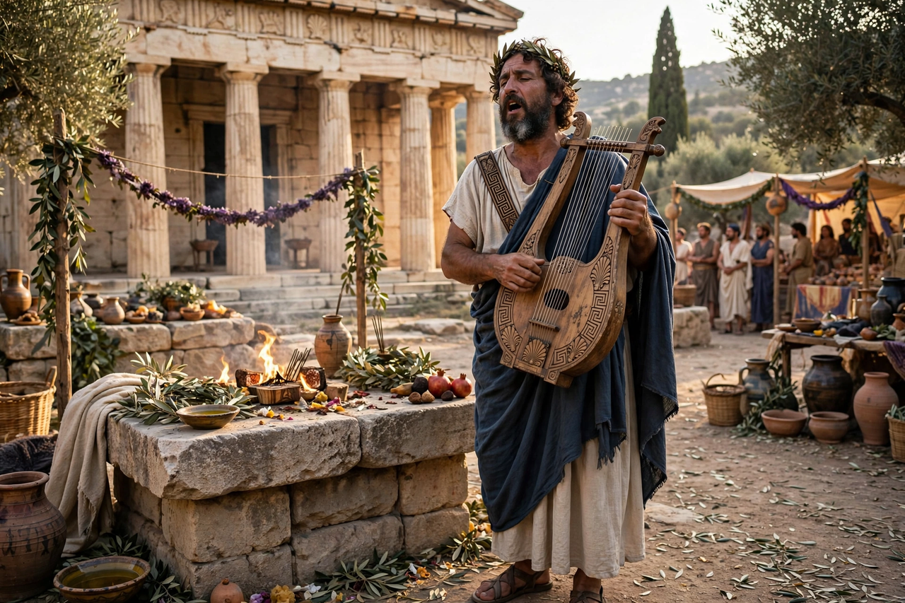

| Number | 33 hymns |
|---|---|
| Language | Ancient Greek (epic dialect) |
| Date | c. 7th–5th centuries BCE (some later) |
| Longest | Hymn to Demeter (495 lines); Hymn to Apollo (546 lines) |

The Homeric Hymns are a collection of thirty-three anonymous ancient Greek hymns celebrating individual gods. Composed in the same dactylic hexameter and formulaic style as the Iliad and Odyssey, they were traditionally attributed to Homer; modern scholars date them variously, with the longest and most elaborate belonging to the 7th–6th centuries BCE. They were performed as preludes (prooimia) to epic recitation at festivals.
Five hymns are substantial narrative poems. The Hymn to Demeter tells of Persephone's abduction by Hades and the founding of the Eleusinian Mysteries. The Hymn to Apollo combines a Delian account of the god's birth with a Pythian account of his slaying of the dragon Python and the founding of Delphi. The Hymn to Hermes is a comic tale of the infant god's theft of Apollo's cattle and invention of the lyre. The Hymn to Aphrodite recounts the goddess's seduction of Anchises and the begetting of Aeneas. The shorter Hymn to Dionysus describes the god's capture by Tyrrhenian pirates.
The collection survived in medieval manuscripts of Homer; the sole complete manuscript was discovered in Moscow in 1777 by Christian Friedrich Matthaei. The hymns remained an important source for Greek religion and myth, preserving stories — such as Demeter's search for Persephone — barely told elsewhere in early epic.
See also: Anchises · Aeneas · Twelve Olympians